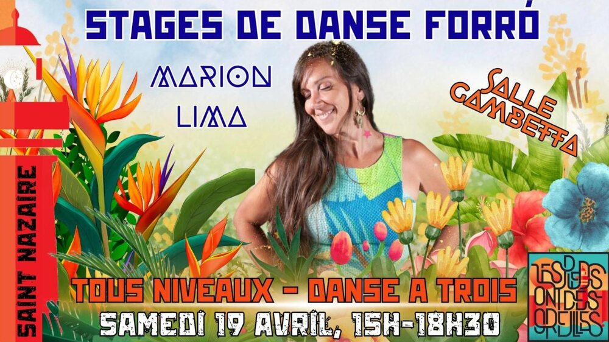

Stages de danse forró avec Marion Lima

Lieu : École Gambetta, 67bis rue de Cardurand, Saint-Nazaire
À l'occasion du concert de Nandinho Barros, des stages de niveau international avec Marion Lima (Paris).
15h30-17h : forró tous niveaux, un stage transversal.
17h30-19h : danse à trois (apprendre à danser en trio, changer de partenaire au cours d'une danse).
Les deux stages sont adaptés à tous les niveaux, la maîtrise des pas de base est requise.